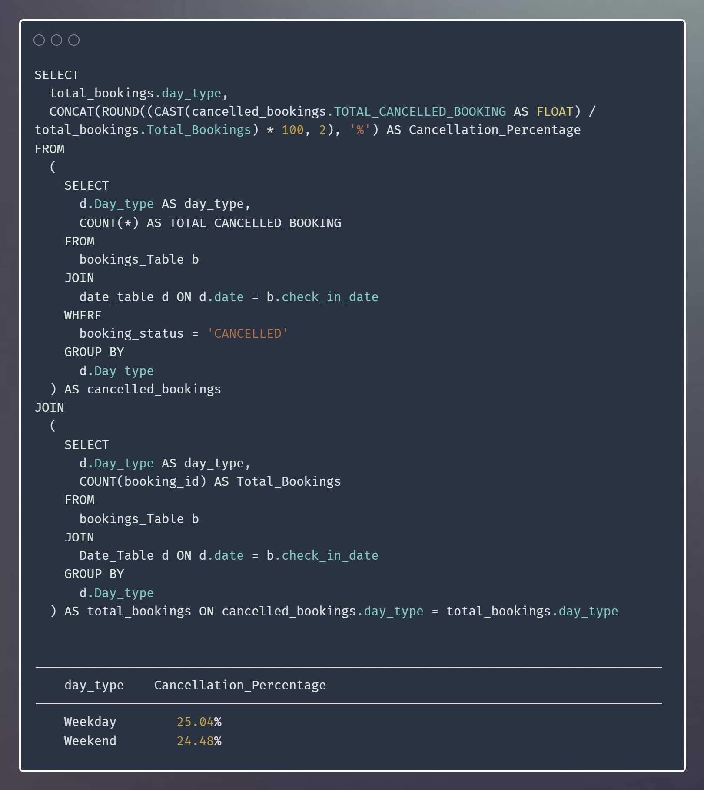

Company is losing its market share and revenue in the luxury/business hotels category. Due to strategic moves from other competitors and ineffective decision-making in management.
The management wants to fix this issue, the managing director wanted to incorporate “Business and Data Intelligence” to regain their market share and revenue.
The goal of this project is to perform data analytics on data to incorporate “Business and Data Intelligence” to regain the market share and revenue using various tools and technologies.
Revenue - generated & realised
The Generated revenue refers to the total revenue that was projected or expected to be earned during a specific month.
On the other hand, the Realized revenue represents the actual revenue that was achieved or collected in those months.
More about project
occupancy_Percentage
The "Occupancy Percentage" refers to the proportion of rooms or accommodations that are occupied in a given time period.
The occupancy percentage provides insights into how effectively a property is filling its available rooms.
More about project
DBRN - Daily Booked Room Nights
DBRN represents the number of rooms booked in a hotel or accommodation establishment on a daily basis.
It serves as a crucial indicator of occupancy and overall demand within the hospitality industry.
More about project
DURn - Daily Utilized Room Nights
DAILY UTILIZED ROOM NIGHTS (DURN) helps in understanding the occupancy rate and utilization of rooms in the hospitality establishment.
Additionally, we examined the performance of different room classes. These room classes likely represent different levels of luxury and amenities offered by the establishment.
More about project
adr - Average Daily rate
ADR, or Average Daily Rate, is a key metric used in the hospitality industry to evaluate the average price at which hotel rooms are sold per day.
A higher ADR indicates that rooms are being sold at a higher price, which can be an indicator of increased profitability or a reflection of the hotel's pricing strategy.
More about project
Average_Ratings
The "AVERAGE_RATINGS" variable likely represents the average ratings or scores given by customers or guests, reflecting their satisfaction or experience with the hospitality services provided.
It Shows that certain platforms show a higher average rating compared to others, indicating a higher level of satisfaction among customers who booked through those platforms.
More about project

cancellation_percentage
This metric helps assess the rate at which customers cancel their bookings or reservations.
This information can be valuable for hospitality businesses to optimize their operations, staffing, and revenue management strategies based on the expected cancellation patterns.
More about project
Revpar - Revenue Per Available Room
REVPAR is a key performance indicator in the hotel industry that measures the revenue generated per room available for a given period.
This metric provides valuable insights into the financial performance of your hospitality business and enables you to make data-driven decisions to optimize revenue and enhance customer satisfaction.
More about project
Capacity | bookings | cancelled_bookings | no_shows
Cancelled Bookings: This indicates the number of bookings that were initially made but later cancelled by the customers.
No-Shows: This refers to the number of bookings where customers made a reservation but did not show up or failed to check-in.
More about project
Realisation_percentage
This metric indicates the proportion of bookings that resulted in successful checkouts, reflecting the effectiveness of the hotel or accommodation in converting bookings into completed stays.
For example, if the realization percentage is low, it may indicate issues such as booking cancellations, no-shows, or guests leaving before completing their intended stay.
On the other hand, a high realization percentage suggests that the property is effectively converting bookings into completed stays.
More about project